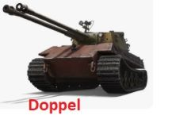

Doppel - немецкий премиум ТТ 8 уровня.

Этот премиум-танк можно было получить из новогодних коробок 2026 (см. на нашем сайте)
Лобовая броня (указан шанс пробития при попадании стандартного снаряда такого же танка в определённую точку брони):